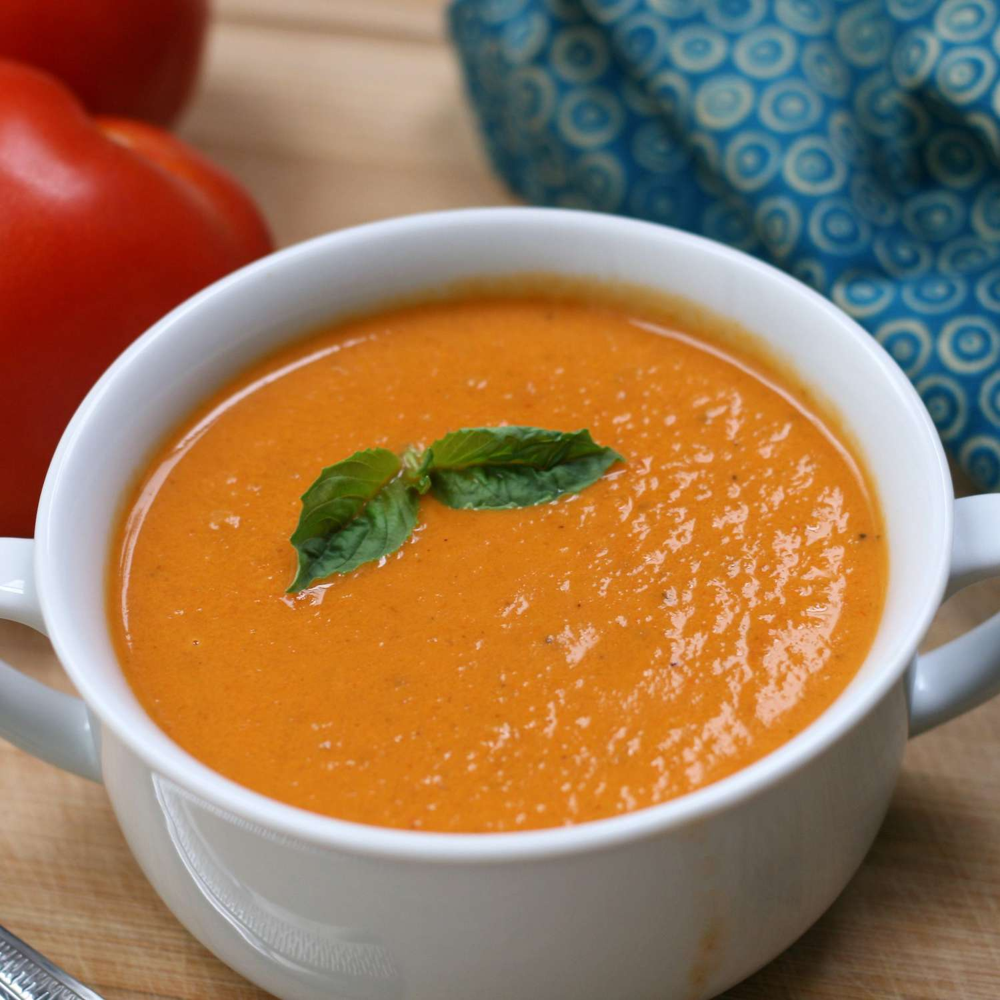

Simple Tomato Soup

Ingredients:
- Butter - use unsalted butter to sautee onions
- Yellow Onion - a ton of onion but it will disappear into the soup
- Garlic - a tbsp
- Crushed tomatoes - a decent amount
- Chicken/vegetable stock - a decent amount
- Basil - 1/4 cup
- Sugar - 1 tbsp
- Black pepper - 1/2 tsp minimum and add more to taste
- Whipping cream - add some so that there a creaminess to the soup
- Parmesan cheese - adds saltiness to the soup and balances acidity
Steps:
- Saute Aromatics - heat a non-reactive pot over medium heat. After heating,melt about 4 Tbsp butter and then sautee onions until softened and golden which should take 10-12 min. Then add minced garlic and saute another minute.
- Make the tomato soup base - stir in two 28 oz cans of crushed tomatoes with their juice, your chicken/vegetable stock, chopped basil, sugar and black pepper. Bring everything to a boil. After that you will reduce heat, partially cover and simmer for 10 minutes.
- Blend if desired - use an immersion blender in the pot or blend in batches using a blender. Obviously, this step is optional, but can impact the flavor adn texture
- Add cream and parmesan - stir in the heavy cream and shredded parmesan.
- Serve – ladle into warm bowls and garnish with more parmesan and basil.